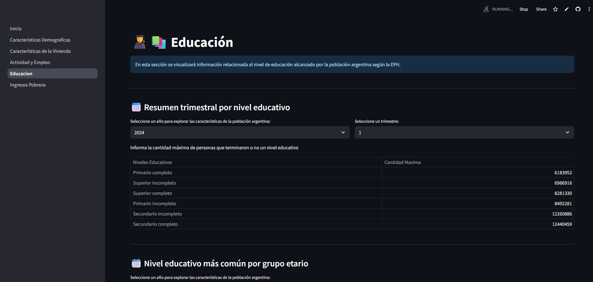
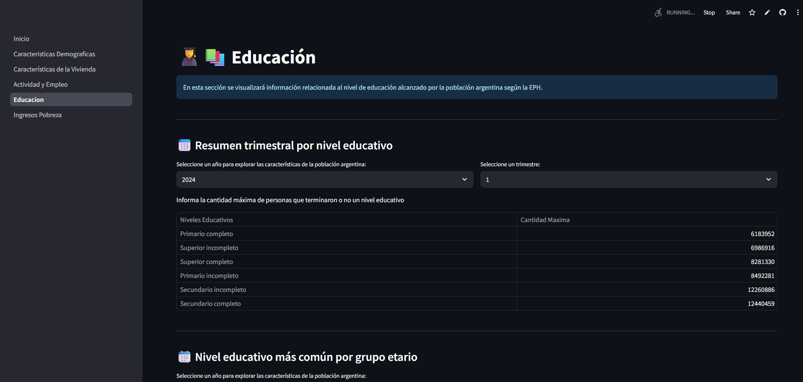

👋Hola! Soy estudiante de Ciencia de Datos en Organizaciones en la Universidad Nacional de La Plata (UNLP).
Apasionado por transformar datos complejos en soluciones estratégicas. Cuento con una sólida base matemática y
experiencia académica en el ciclo de vida del dato: desde la extracción y limpieza (ETL) hasta el modelado y visualización.
Busco aplicar mis habilidades en Python, SQL y NoSQL para generar valor real y continuar mi desarrollo profesional en un equipo dinámico.
Por ultimo quisiera aclarar que disfruto de los desafíos que me permiten crecer profesional y personalmente.
EPH con Python y Streamlit
Cartera de inversiones con Google Sheets
Web Scraping y Analisis de Datos
Utilización de la EPH para Limpieza y Visualización de Datos:
Utilicé Python para la limpieza y visualización de la EPH (Encuesta Permanente de Hogares) y mostré los resultados de una forma interactiva usando Streamlit.
Objetivo: Aplicar mis conocimientos y estudios para crear de forma práctica y simple indicadores demográficos mediante objetos gráficos.
 

Utilización de Google Sheets y Google Finance para crear un portfolio:
Usé herramientas como Google Sheets y Google Finance para crear una plantilla que permitiera tener un control de un portfolio de inversiones.
Objetivo: Generar una plantilla que ayude a las personas a controlar sus activos financieros, obteniendo datos pasados y presentes, gastos, ingresos, promedios y rentabilidad, bajo un modelo FIFO (primero entrado - primero salido).
Web Scraping y Análisis de Datos:
Creé un script en Python que permite realizar web scraping de títulos en diferentes páginas web de medios de noticias en Argentina y los almacena en SQLite. Luego, utilizando Streamlit, se ejecuta una limpieza de los datos y se representan gráficamente.
Agregué una funcionalidad "automatizada" para poder descargar un archivo .pdf con los datos generados y su respectivo Análisis.